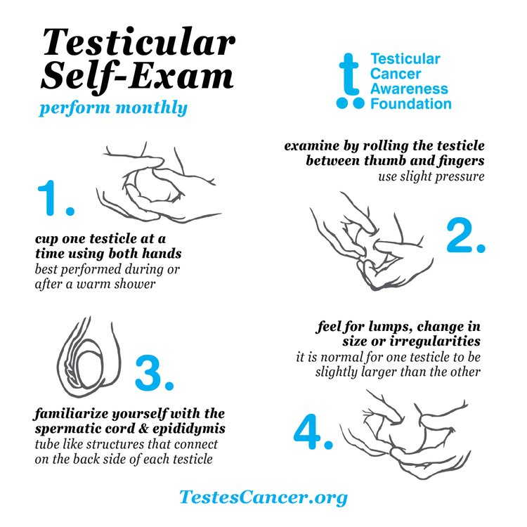

June is Testicular Cancer Awareness Month: Know the
Symptoms and Risk Factors
Posted by Damaris: April 12, 2024in: Cancer, Men's Health, Other Cancers, Wellness.
According to the Testicular Cancer Awareness Foundation, testicular cancer is the leading cancer in men aged 15-44, but
it can strike at any age. Over 95% of testicular cancer cases are curable when detected early.
Possible symptoms of testicular cancer:
- A lump on your testicle (the lump is often
painless, but it can be uncomfortable)
- Swelling of a testicle or a change in how
it feels
- A feeling of heaviness or aching in the scrotum or lower belly (abdomen)
- Swelling in your breasts (this is rare, but can be caused by hormone changes
linked to cancer)
- Some rare signs of advanced testicular
cancer include unexplained lower back
pain, chest pain, or difficulty breathing

painless, but it can be uncomfortable)
it feels
linked to cancer)
cancer include unexplained lower back
pain, chest pain, or difficulty breathing
Risk Factors
- Being in your 20s or 30s, though it can happen at any age
- Being white
- History of cancer in the other testicle
- Undescended testicle
- A family history of testicular cancer, which can put you at a higher risk
- HIV infection
- Using marijuana often or over a long time
Talk with your healthcare provider about your risk factors for testicular cancer and what you can do about them.
About The Author

Valley Communications
Valley Medical Center's Marketing and Community Outreach Office